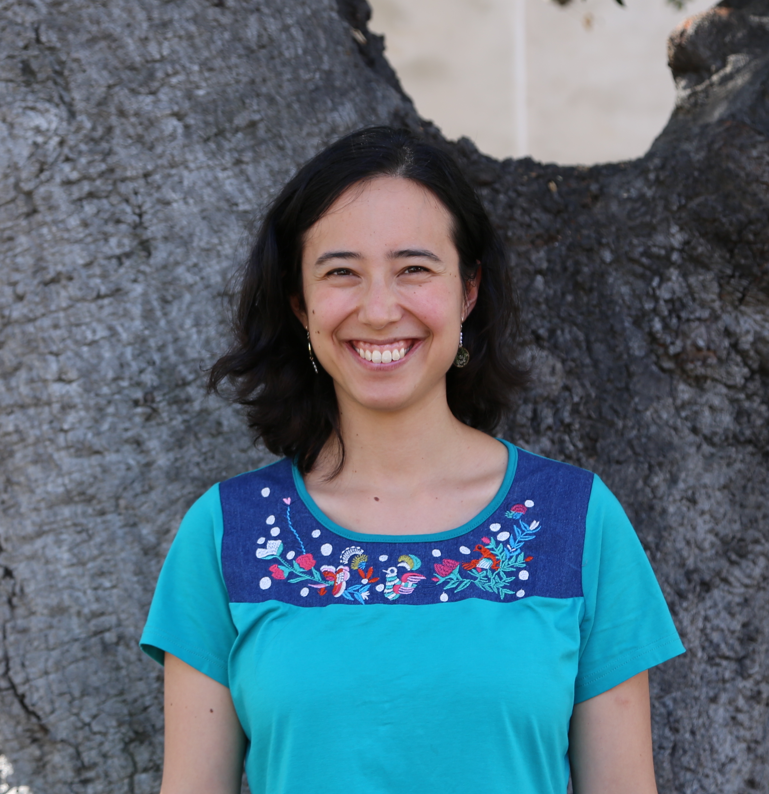

annayqho@berkeley.edu
I am a Miller Fellow at UC Berkeley. Starting soon, I will be an assistant professor in the Department of Astronomy at Cornell.
I am interested in high-energy astrophysics, particularly the explosive manifestations of stellar death. I use a variety of observational techniques, including optical time-domain surveys, radio to submillimeter interferometry, and massively multiplexed spectroscopic surveys.
I obtained my PhD from Caltech in 2020 under the supervision of Shri Kulkarni, working with the Zwicky Transient Facility. Before coming to Caltech, I spent a year on a Fulbright at the Max Planck Institute for Astronomy in Heidelberg, Germany, where I worked with Hans-Walter Rix, Melissa Ness, and David Hogg on The Cannon. I obtained my B.S. in Physics at MIT in 2014, after spending two summers at the National Radio Astronomy Observatory working with Scott Ransom on millisecond pulsars.